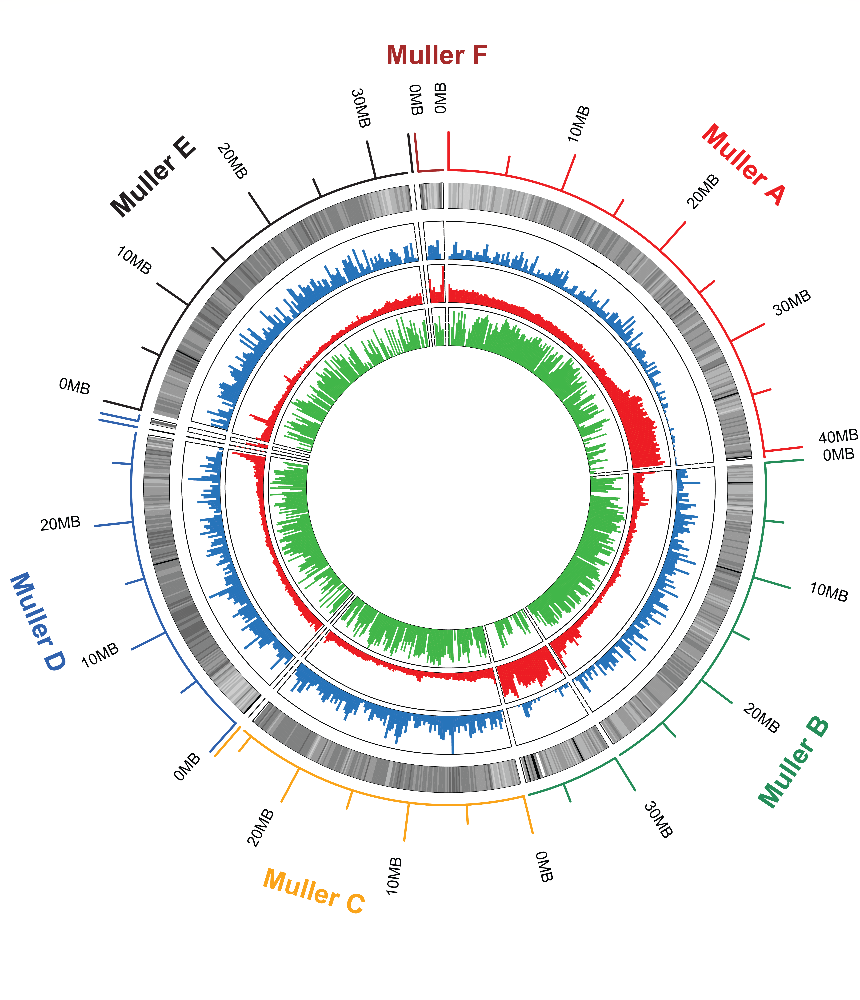
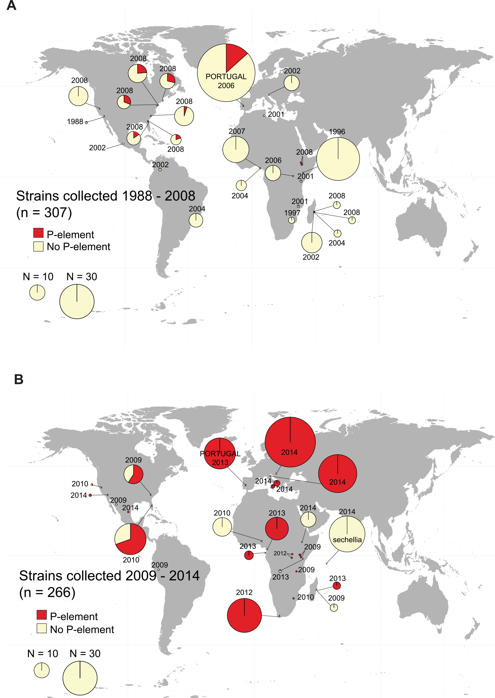
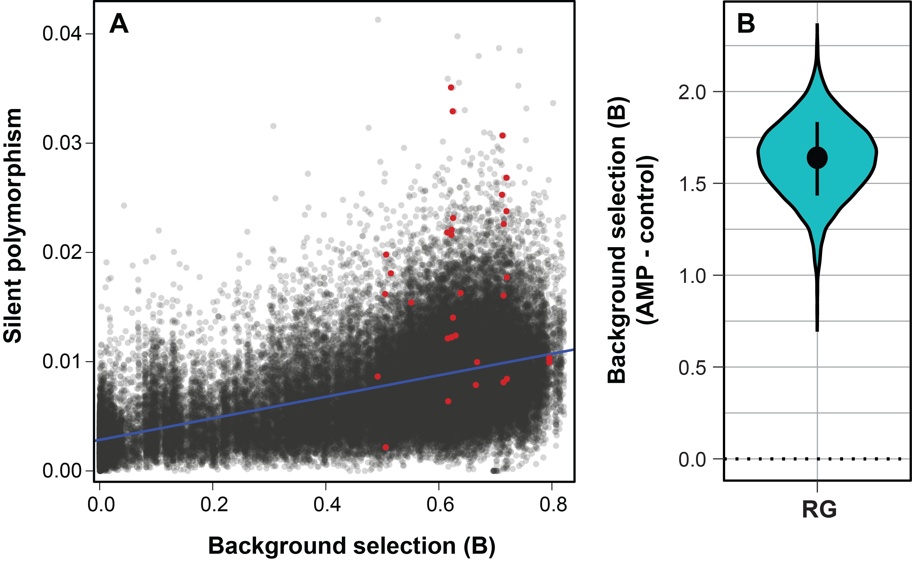

Though Drosophila melanogaster is a staple system for studying evolution, little is known about its ecology. Additionally, Sophophora (the group containing D. melanogaster) represents only ~300 of the Drosophila species, compared to the ~1400 Drosophila in the sister clade. Mycophagous Drosophila have been extensively studied ecologically for ~40 years, are highly diverged from D. melanogaster, and are preliminary models for the evolution of toxin-tolerance, immunity, host-parasite evolution and behavior. I study D. innubila, a species of mycophageous Drosophila of particular interest due to its high frequency infection by a DNA virus and a male-killing Wolbachia. I’m particularly interested in identifying novel methods of parasite regulation, outside those characterized in D. melanogaster. I also examine the evolution of Drosophila innubila Nudivirus (DiNV), the parasite infecting D. innubila, I find signatures of selection in a few key genes in both DiNV and related viruses.

Previously the transposable element ‘P-element’ horizontally invaded D. melanogaster, causing the hybrid dysgenesis phenotype, a phenotype where females lacked fully developed or functional ovaries. I identified the spread of P-element to D. simulans and characterized hybrid dysgenesis in this species. More recently I have been using sequencing information of the P-elements in D. melanogaster and simulans, combined with world fruit trade data to characterize the phylogeography of the spread of P-element worldwide. I have also been interested in the rates of horizontal transfer of TEs between species of overlapping ranges, using the sympatric D. pseudoobscura group as a study system. I find rampant horizontal exchange between the species, suggesting that hybrid dysgenesis may not be as catestrophic a phenotype in the wild as in the lab.

While it appears that a majority of immune genes in Drosophila melanogaster are evolving under positive selection, a few genes, such as AMPs, and immune genes in other species, appear to be under balancing selection, likely due to a trade off between the benefit of a resistance allele under infection and its cost when not infected. I’m interested in the population genetics of these genes and the causes of the signatures of balancing selection, specifically if these are driven by duplication events. I am currently using machine learning to identify if AMPs duplicate more than background genes across the Drosophila phylogeny.